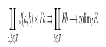
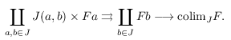

5th Nov 2022–13 Feb 2023
· 2 min read ·
#emacs
Adjusting preview.el for vertical monitors
preview.el library (whether it be in a .tex buffer, or—via
org-auctex—in Org) things get really messed up when one or more
monitors are set up in portrait mode.
When you have two monitors oriented vertically, previews might end up
looking something like this:


Imagine a whole page of this—things get pretty funky. Being a boring person, I would rather prefer the much more ordinary looking
Thankfully, this isn’t so complicated. Looking intopreview.el, we
get the geometry of the frame from preview-get-geometry. At least,
this is what preview-generate-preview calls before delegating the
heavy lifting to some internal functions. After staring at the former
function for a while, one can single out preview-get-dpi as the main
culprit. It seems to calculate the “resolution” of the preview:
(defun preview-get-dpi ()
(let* ((monitor-attrs (frame-monitor-attributes))
(mm-dims (cdr (assoc 'mm-size monitor-attrs)))
(mm-width (nth 0 mm-dims))
(mm-height (nth 1 mm-dims))
(pixel-dims (cl-cdddr (assoc 'geometry monitor-attrs)))
(pixel-width (nth 0 pixel-dims))
(pixel-height (nth 1 pixel-dims)))
(cons (/ (* 25.4 pixel-width) mm-width)
(/ (* 25.4 pixel-height) mm-height))))
frame-monitor-attributes function;
its output for a horizontal monitor is
'((name . "DP1")
(geometry 0 0 1920 1080)
(workarea 0 0 1920 1080)
(mm-size 530 300)
(frames <<omitted>>)
(source . "XRandR 1.5"))
'((name . "DP1")
(geometry 0 0 1080 1920)
(workarea 0 0 1080 1920)
(mm-size 530 300)
(frames <<omitted>>)
(source . "XRandR 1.5"))
C-h f display-monitor-attributes-list RET for more information. This means
that in portrait mode, we actually compare the pixel width of the
monitor with its physical height, as well as its pixel height with its
width. Naturally, and depending on the specific setup, this produces
too narrow or too wide previews.
The solution is to only compare the comparable values. Indeed,
overriding the built-in preview-get-dpi function with
(defun preview-get-dpi ()
(-let (((&alist 'mm-size (mw mh)
'geometry (_ _ pw ph))
(frame-monitor-attributes)))
(cons (/ (* 25.4 (max pw ph)) (max mw mh))
(/ (* 25.4 (min pw ph)) (min mw mh)))))
preview-get-dpi should
probably be fixed; I will report it as an Emacs bug.
As an aside, this is an excellent opportunity to see the ergonomic
benefits of the dash.el library. Compare the readability of the
“fixed” implementation using -let to the original one above. I
certainly know which of the two I’d rather write!
 Have a comment? Write me an email!
Have a comment? Write me an email!